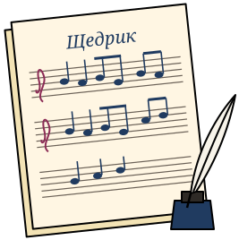
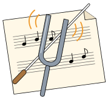

Творчість
Леонтович створив власний, неповторний стиль хорової обробки, у якому народна мелодія звучить по-новому, а кожен голос хору стає самостійним персонажем.
Хорові обробки народних пісень
Основу творчої спадщини композитора становлять близько 150 обробок українських народних пісень для хору: колядок і щедрівок, веснянок, жартівливих, побутових, історичних та обрядових пісень.
На відміну від простого гармонізування мелодії, Леонтович застосовував поліфонію: голоси хору переплітаються, підхоплюють і перегукуються один з одним. Завдяки цьому коротка народна пісня розгортається в маленьку хорову картину зі своїм сюжетом, настроєм і драматургією. Сучасники називали такі твори «хоровими мініатюрами».

Найвідоміші твори
Наведіть курсор або натисніть на назву твору, щоб дізнатися більше.
-
Обробка новорічної щедрівки про ластівку, що віщує господарю щедрий рік. Увесь твір тримається на безперервному мотиві з чотирьох звуків. Остаточна редакція – 1919 рік; у світі твір відомий як «Carol of the Bells». Докладніше про «Щедрик» →
-
Весела пісня про дударика, який грає на дудці. Нижні голоси хору наслідують звучання народного інструмента, а верхні ведуть жваву мелодію. Одна з найулюбленіших обробок хорових колективів.
-
Трагічна пісня про похорон козака: за ним ведуть вороного коня, а кохана плаче за загиблим. Композитор передає ходу траурної процесії та стриманий, глибокий сум, поєднуючи плач і героїку.
-
Ніжна лірична мініатюра з образом світанку, коли співають півні. Голоси хору м'яко переплітаються, створюючи тихий, споглядальний настрій.
-
Пісня з традиційним для українського фольклору образом зозулі. В обробці Леонтовича мелодія поступово проходить різними голосами хору, і кожне її проведення звучить по-новому.
-
Балада з трагічним сюжетом про долю дочки, яку мати віддала заміж далеко від дому. Композитор розгортає коротку пісню в драматичну хорову сцену з наростанням напруги.
-
Жартівлива пісня про дівчину за прядкою. Частина хору безперервно повторює коротку фігуру, що нагадує обертання прядки, а на цьому тлі звучить основна мелодія.
-
Лірична пісня, у якій природа – зелений гай – співзвучна з почуттями людини. Обробка вирізняється прозорою фактурою та співучістю всіх голосів.
-
Оригінальний твір Леонтовича для хору на слова поета Миколи Вороного. Показує композитора не лише як майстра обробок, а і як автора власної музики з виразною образністю.
-
Авторський хоровий твір, у якому скресання криги навесні стає символом пробудження та оновлення. Музика передає рух, силу і радість весняної природи.

Рукописи та редакції
Композитор був дуже вимогливим до себе. Над багатьма творами він працював роками, повертаючись до них знову і знову. Так, «Щедрик» має кілька редакцій: першу він записав на початку 1900-х років, а остаточну завершив лише у 1919 році.
Свої обробки Леонтович записував від руки на нотному папері – чітким, акуратним почерком. Частина рукописів збереглася і сьогодні зберігається в архівах та музеях, інші твори відомі завдяки виданням, здійсненим після смерті композитора.
Авторські твори та опера
Окрім обробок, Леонтович писав і власні композиції: хорові твори на слова українських поетів, зокрема «Легенду» та «Льодолом», а також інструментальні п'єси.
У останні роки життя він працював над казковою оперою «На русалчин Великдень» за мотивами української міфології. Опера залишилася незавершеною – роботу перервала трагічна загибель композитора. Пізніше твір було відредаговано і поставлено на сцені.


Педагог і просвітник
Леонтович усе життя навчав інших. Він уклав «Практичний курс навчання співу в середніх школах», де виклав власну методику роботи з дитячим хором, і вважав, що музика має бути доступною кожній дитині.
У Києві та Тульчині композитор викладав на музичних курсах для вчителів і диригентів, допомагав організовувати хори по всій Україні. Чимало його учнів згодом стали відомими хормейстерами.